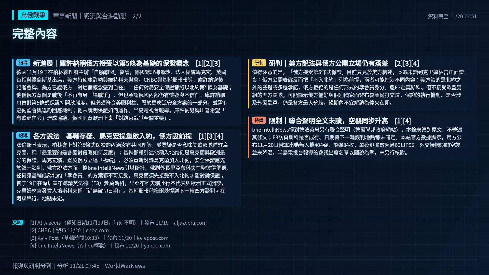

柏林自願聯盟會議後庫許納稱俄方「已接受」北約第5條式安全保證概念：澤倫斯基存疑，俄副外長拒絕「準會員」並邀英法德赴莫斯科


報導新進展｜庫許納稱俄方接受以第5條為基礎的保證概念
德國11月19日在柏林總理府主辦「自願聯盟」會議，德國總理梅爾茨、法國總統馬克宏、英國首相與澤倫斯基出席，美方特使庫許納與維特科夫與會。CNBC與基輔郵報報導，庫許納會後記者會稱，美方已讓俄方「對這個概念感到自在」：任何對烏安全保證都將以北約第5條為基礎；他稱俄方意圖是戰後「不再有另一場戰爭」，但也承認俄國內部仍有懷疑與不信任。庫許納稱川普對第5條式保證持開放態度，但必須符合美國利益、屬於更廣泛安全方案的一部分，並需有遵約監督與違約回應機制；他未說明保證如何運作。半島電視台報導，庫許納另稱川普希望「有歐洲在旁」達成協議，俄國同意歐洲上桌「對結束戰爭至關重要」。
報導各方說法｜基輔存疑、馬克宏提重啟入約，俄方設前提
澤倫斯基表示，柏林會上對第5條式保證的內涵沒有共同理解，並質疑是否意味美歐部隊進駐烏克蘭，稱「最重要的是各國對侵略如何反應」；基輔郵報引述他稱入北約仍是烏克蘭與歐洲最好的保證。馬克宏稱，鑑於俄方立場「極端」，必須重新討論烏克蘭加入北約，安全保證應先於領土談判。俄方說法方面，據bne IntelliNews引塔斯社，俄副外長里亞布科夫在聖彼得堡稱，任何讓基輔成為北約「準會員」的方案都不可接受，烏克蘭須先接受不入北約才能討論保證；普丁19日在深圳宣布邀請英法德（E3）赴莫斯科，里亞布科夫稱此行不代表與歐洲正式開談，克里姆林宮發言人培斯科夫稱「尚無確切日期」。基輔郵報稱梅爾茨提議下一輪四方談判可在阿聯舉行，地點未定。
研判研判｜美方說法與俄方公開立場仍有落差
值得注意的是，「俄方接受第5條式保證」目前只見於美方轉述，本輪未讀到克里姆林宮正面證實；俄方公開表態反而把「不入北約」列為前提，兩者可能指涉不同內容：美方談的是北約之外的雙邊或多邊承諾，俄方拒絕的是任何形式的準會員身分。邀E3赴莫斯科、但不接受歐盟另組的五方團隊，可能顯示俄方偏好與個別國家而非布魯塞爾打交道。保證的執行機制、是否涉及外國駐軍，仍是各方最大分歧，短期內不宜解讀為停火在即。
待證限制｜聯合聲明全文未讀，空襲同步升高
bne IntelliNews提到德法英烏另有聯合聲明（德國聯邦政府網站），本輪未讀到原文，不轉述其條文；E3訪莫斯科是否成行、日期與下一輪談判地點都未確定。本站官方數據顯示，烏方公布11月20日俄軍出動無人機404架、飛彈84枚，單夜飛彈數超過60日P95，外交接觸期間空襲並未降溫。半島電視台報導的會議出席名單以圖說為準，未另行核對。
- [1] Al Jazeera（僅知日期11月19日，時刻不明）｜發布 11/19
- [2] CNBC｜發布 11/20
- [3] Kyiv Post（基輔時間10:33）｜發布 11/20
- [4] bne IntelliNews（Yahoo轉載）｜發布 11/20